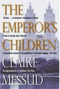
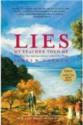
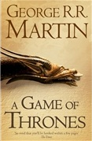
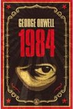

This Month's Choice

Emperors Children, review by Ron Charles
We've all caught glimpses of them before, but Claire Messud has captured and pinned under glass members of a striking subspecies of the modern age: the smart, sophisticated, anxious young people who think of themselves as the cultural elite. Trained for greatness in the most prestigious universities, these shiny liberal arts graduates emerge with expensive tastes, the presumption of entitlement and no real economic prospects whatsoever. If you are one of them or if you cannot resist the delicious pleasure of pitying them, you will relish every page of The Emperors Children.

Loewen proposes that schools give American students a feel-good non-controversial history. He explains how this not only bores students, but also fosters misunderstanding. Additionally, Loewen points out that a feel-good history - which underplays events that might put the country or government in a bad light, such as the treatment of black and poor people - disaffects poor students and minority students. To support this claim, Loewen provides statistics showing that the largest achievement gap occurs in history courses.
Lies My Teacher Told Me, review by Scott Hughes
In Lies My Teacher Told Me: Everything Your History Textbook Got Wrong, James Loewen criticizes the general history curriculum in American schools. He studies twelve popular history textbooks, and compares the presentation of history with the evidence currently available to historians. This book won the Oliver Cromwell Cox Award for Distinguished Anti-Racist Scholarship and the 1996 American Book Award.Loewen proposes that schools give American students a feel-good non-controversial history. He explains how this not only bores students, but also fosters misunderstanding. Additionally, Loewen points out that a feel-good history - which underplays events that might put the country or government in a bad light, such as the treatment of black and poor people - disaffects poor students and minority students. To support this claim, Loewen provides statistics showing that the largest achievement gap occurs in history courses.

Game of Thrones by George R R Martin, review by Tim Martin
Political metaphors do not come much more pointed than the Iron Throne, the seat of the kings of Westeros in George R R Martins sprawling fantasy sequence A Song of Ice and Fire. Forged from a thousand captured daggers and swords, the vast metal chair is designed to prick and goad its calmest occupants and slice the unwary to ribbons. One aspirant gloomily remarks on the barbs along the back, the ribbons of twisted steel, the jagged ends of swords and knives all tangled up and melted. It is not a seat where a man can rest at ease.

Nineteen Eighty-Four remains as one of the most popular and widely read books of all time. Indeed, the novel has even greatly affected common language and created new phrases, words, and idioms. For example, the commonplace term 'big brother' comes from Nineteen Eighty-Four.
The impact of Nineteen Eighty-Four is not surprising, because the well-written novel amazingly predicts a frightening future with shocking accuracy. In contemporary society, the novel can frighten readers even more, since the readers can actually see how much of the Orwell's warnings have come to pass.
Nineteen Eighty-Four, review by Scott Hughes
Nineteen Eighty-Four (1984) is a dystopian novel written by the English writer George Orwell (1903 - 1950). The novel was first published in 1949. The book tells the story of fictional character Winston Smith and his attempt to rebel against the totalitarian state in which he lives.Nineteen Eighty-Four remains as one of the most popular and widely read books of all time. Indeed, the novel has even greatly affected common language and created new phrases, words, and idioms. For example, the commonplace term 'big brother' comes from Nineteen Eighty-Four.
The impact of Nineteen Eighty-Four is not surprising, because the well-written novel amazingly predicts a frightening future with shocking accuracy. In contemporary society, the novel can frighten readers even more, since the readers can actually see how much of the Orwell's warnings have come to pass.